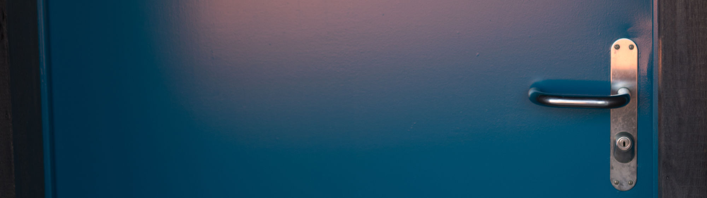
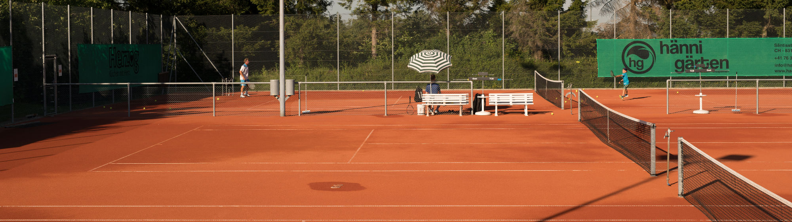
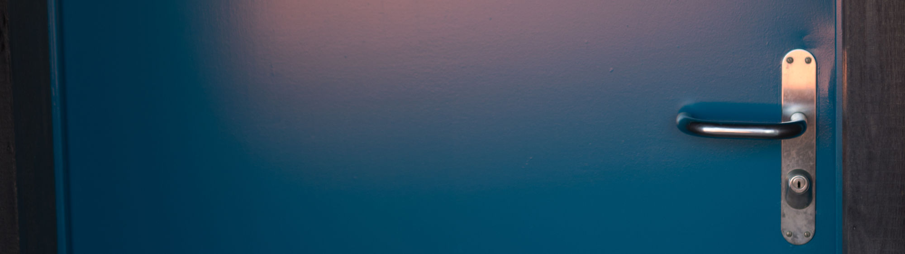
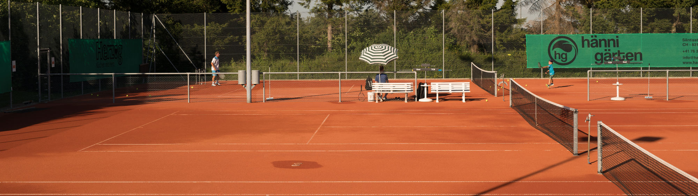
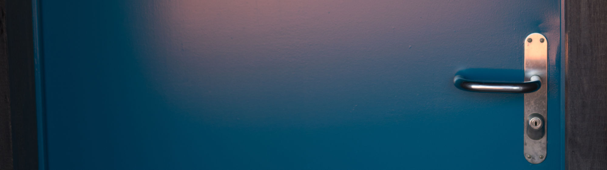
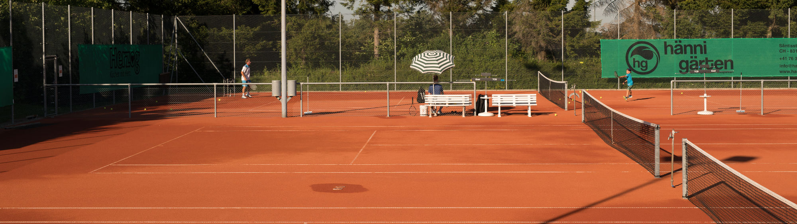
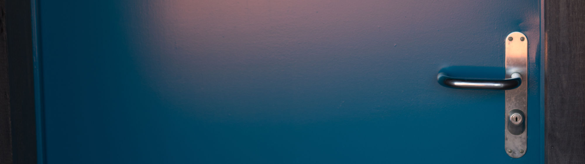
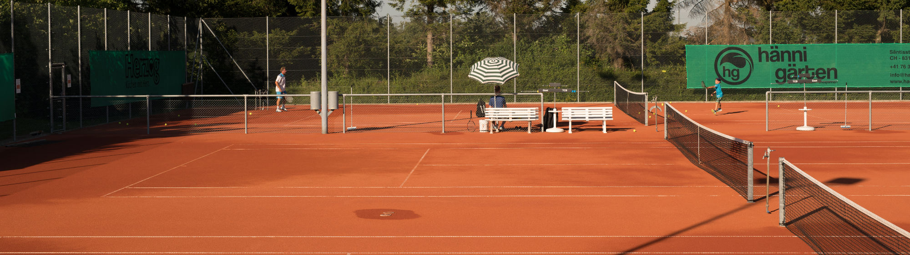

TCB Tennisclub Brütten - Training

Hier findest du Links zu den einzelnen Sommer- und Wintertrainings:
Trainings
Anmeldungen sind grundsätzlich jederzeit möglich, sofern Platz vorhanden ist. Das Sommertraining findet direkt in Brütten statt. Für die Wintertrainings sind verschiedene Standorte in Winterthur und Umgebung vorhanden, wobei das Sportzentrum Auwiesen das nächstgelegene ist.